-
Testing functionalities of Chequebook feature screen
10:20:40 am / 31:30:827 Skip
Testing functionalities of Chequebook feature screen
05.06.2023 10:20:40 05.06.2023 10:22:11 31:30:827 · #test-id=1Skipchecking if the user is able to create a chequebook - short processGiven User Launch CSM Core ApplicationStep skippedAnd User Click Chequebook Request MenuStep skippedAnd User Click Maintanence sub menu in chequebook requestStep skippedAnd User Update the test data id for CHB_001Step skippedAnd User Enter the Number of Cheque BooksStep skippedAnd User Cheque Code in Cheque book Maintenance ScreenStep skippedAnd User Enter the Branch Code in Cheque book Maintenance ScreenStep skippedAnd User Enter the Currency Code in Cheque book Maintenance ScreenStep skippedAnd User Enter the GL Code in Cheque book Maintenance ScreenStep skippedAnd User Enter the CIF Code in Cheque book Maintenance ScreenStep skippedAnd User Enter the Serial No in Cheque book Maintenance ScreenStep skippedAnd User Click Save button in Cheque book Maintenance ScreenStep skippedAnd User click ok button for no signatures and no finger print pop up warning MessageStep skippedAnd User Click Search button in chequebook request Maintenance ScreenStep skippedAnd User Validate Cheque book createdStep skippedAnd User Store the newly created Cheque book codeStep skippedSkipchecking if the user is able to create a chequebook - short processGiven User Launch CSM Core ApplicationStep skippedAnd User Click Chequebook Request MenuStep skippedAnd User Click Approve Sub MenuStep skippedAnd User Update the test data id for CHB_002Step skippedAnd User Search Cheque Book Code in Approve ScreenStep skippedAnd User Select Cheque Book Code in Approve ScreenStep skippedAnd User Click Approve button in Approve ScreenStep skippedAnd User Click Ok button in Warning pop up Message in Approve ScreenStep skippedAnd User Click Maintanence sub menu in chequebook requestStep skippedAnd User Click Search button in chequebook request Maintenance ScreenStep skippedAnd User Search Approved chequebook code in Cheque book Request Maintenance ScreenStep skippedThen User Validate the Approved chequebook record in Cheque book Request Maintenance ScreenStep skippedSkipchecking if the user is able to submit a chequebook - short processGiven User Launch CSM Core ApplicationStep skippedAnd User Click Chequebook Request MenuStep skippedAnd User Click Approve Sub MenuStep skippedAnd User Update the test data id for CHB_002Step skippedAnd User Search Cheque Book Code in Approve ScreenStep skippedAnd User Select Cheque Book Code in Approve ScreenStep skippedAnd User Click Approve button in Approve ScreenStep skippedAnd User Click Ok button in Warning pop up Message in Approve ScreenStep skippedAnd User Click Apply to Submit Sub MenuStep skippedAnd User Search Cheque Book Code in Apply to Submit ScreenStep skippedAnd User Select Cheque Book Code in Apply to Submit ScreenStep skippedAnd User Click Apply to Submit buttonStep skippedAnd User Submit Sub MenuStep skippedAnd User Search Cheque Book Code in Submit ScreenStep skippedAnd User Select Cheque Book Code in Submit ScreenStep skippedAnd User Click Submit buttonStep skippedAnd User Click Maintanence sub menu in chequebook requestStep skippedAnd User Click Search button in chequebook request Maintenance ScreenStep skippedAnd User Search Submitted chequebook code in Cheque book Request Maintenance ScreenStep skippedThen User Validate the Submitted chequebook record in Cheque book Request Maintenance ScreenStep skippedSkipchecking if the user is able to cancel a chequebook without a reason - short processGiven User Launch CSM Core ApplicationStep skippedAnd User Click Chequebook Request MenuStep skippedAnd User Click To Cancel Sub MenuStep skippedAnd User Update the test data id for CHB_004Step skippedAnd User Search Cheque Book Code in To Cancel ScreenStep skippedAnd User Select Cheque Book Code in To Cancel ScreenStep skippedAnd User Click To Cancel button in To Cancel ScreenStep skippedAnd User Click Approve Cancel Sub MenuStep skippedAnd User Search Cheque Book Code in Approve Cancel ScreenStep skippedAnd User Select Cheque Book Code in Approve Cancel ScreenStep skippedAnd User Click Cancel button in Approve Cancel ScreenStep skippedAnd User Click Ok button in Warning pop up Message in Approve Cancel ScreenStep skippedAnd User Click Maintanence sub menu in chequebook requestStep skippedAnd User Click Search button in chequebook request Maintenance ScreenStep skippedAnd User Search Cancelled chequebook code in Cheque book Request Maintenance ScreenStep skippedThen User Validate the Cancelled chequebook record in Cheque book Request Maintenance ScreenStep skippedSkipchecking if the user is abel to cancel the chequebook with a reason -short processGiven User Launch CSM Core ApplicationStep skippedAnd User Click Chequebook Request MenuStep skippedAnd User Click To Cancel Sub MenuStep skippedAnd User Update the test data id for CHB_005Step skippedAnd User Search Cheque Book Code in To Cancel ScreenStep skippedAnd User Select Cheque Book Code in To Cancel ScreenStep skippedAnd User Click To Cancel button in To Cancel ScreenStep skippedAnd User Validate Missing Reason Pop upStep skippedAnd User Enter Cancel Reason in To Cancel ScreenStep skippedAnd User Click Approve Cancel Sub MenuStep skippedAnd User Search Cheque Book Code in Approve Cancel ScreenStep skippedAnd User Select Cheque Book Code in Approve Cancel ScreenStep skippedAnd User Click Cancel button in Approve Cancel ScreenStep skippedAnd User Click Maintanence sub menu in chequebook requestStep skippedAnd User Click Search button in chequebook request Maintenance ScreenStep skippedAnd User Search Cancelled chequebook code in Cheque book Request Maintenance ScreenStep skippedThen User Validate the Cancelled chequebook record in Cheque book Request Maintenance ScreenStep skippedSkipchecking if the user is able to destroy a chequebook - short processGiven navigate to CSM application and login with valid credentialsStep skippedAnd click on cheque request moduleStep skippedAnd click on to be destroyed moduleStep skippedAnd User update Test data id for test case CHB_006Step skippedAnd search the cheque code for to be destroyed cheque codeStep skippedAnd User enter reason to suspend chequebook recordStep skippedAnd click on to destroy buttonStep skippedThen verify server got loaded for to be destroyed recordStep skippedAnd click on destroy moduleStep skippedAnd search for destroy record cheque codeStep skippedAnd select the destroy recordStep skippedAnd click on destroy buttonStep skippedThen verify server got loaded while we destroy the cheque in destroy stageStep skippedAnd User Click Maintanence sub menu in chequebook requestStep skippedAnd User Click Search button in chequebook request Maintenance ScreenStep skippedAnd User Search destroyed chequebook code in Cheque book Request Maintenance ScreenStep skippedThen User Validate the destroyed chequebook record in Cheque book Request Maintenance ScreenStep skippedSkipchecking if the user is able to suspend a chequebook - short processGiven User Launch CSM Core ApplicationStep skippedAnd User Click Chequebook Request MenuStep skippedAnd User Click Suspend Sub MenuStep skippedAnd User update Test data id for checking if the user is able to suspend a chequebook short processStep skippedAnd User search the chequebook code in chequebook request Maintenance ScreenStep skippedAnd User Select the Searched Record in chequebook request Maintenance ScreenStep skippedAnd User click suspend button to suspend the cheque book recordStep skippedAnd User Click Maintanence sub menu in chequebook requestStep skippedAnd User Click Search button in chequebook request Maintenance ScreenStep skippedAnd User Search Suspended chequebook code in Cheque book Request Maintenance ScreenStep skippedThen User Validate the suspended chequebook record in Cheque book Request Maintenance ScreenStep skippedSkipchecking if the user is able to approve reverse cancellation record under "approve cancellation reversal " screenGiven User Launch CSM Core ApplicationStep skippedAnd User Click Chequebook Request MenuStep skippedAnd User Click To Reverse Cancellation Sub MenuStep skippedAnd User update Test data id for checking if the user is able to suspend a chequebook short processStep skippedAnd User Search the chequebook code in To Reverse Cancellation ScreenStep skippedAnd User Select the chequebook code in To Reverse Cancellation ScreenStep skippedAnd User Click Reverse button in To Reverse Cancellation ScreenStep skippedAnd User Click Approve Cancellation Reversal Sub MenuStep skippedAnd User Search the chequebook code in Approve Cancellation Reversal ScreenStep skippedAnd User Select the chequebook code in Approve Cancellation Reversal ScreenStep skippedAnd User Click Reverse button in Approve Cancellation Reversal ScreenStep skippedAnd User Click Maintanence sub menu in chequebook requestStep skippedAnd User Click Search button in chequebook request Maintenance ScreenStep skippedAnd User Search the Reversed Cancellation chequebook code in Cheque book Request Maintenance ScreenStep skippedThen User Validate the Reversed Cancellation chequebook record in Cheque book Request Maintenance ScreenStep skippedSkipchecking if the user is able approve cancellation reversal throught alertGiven User Launch CSM Core ApplicationStep skippedAnd User Click Chequebook Request MenuStep skippedAnd User Click To Reverse Cancellation Sub MenuStep skippedAnd User update Test data id for checking if the user is able approve cancellation reversal throught alertStep skippedAnd User Search the chequebook code in To Reverse Cancellation ScreenStep skippedAnd User Select the chequebook code in To Reverse Cancellation ScreenStep skippedAnd User Click Reverse button in To Reverse Cancellation ScreenStep skippedAnd User Click Approve button in Send Alert To Reverse Cancellation ScreenStep skippedAnd User Enter BM User Name in User Information pop upStep skippedAnd User Enter BM Password in User Information pop upStep skippedAnd User Click Submit button in User Information pop upStep skippedAnd User Click Approve button in approve item pop upStep skippedAnd User Search the chequebook code in Approve Cancellation Reversal ScreenStep skippedAnd User Select the chequebook code in Approve Cancellation Reversal ScreenStep skippedAnd User Click Reverse button in Approve Cancellation Reversal ScreenStep skippedAnd User Click Maintanence sub menu in chequebook requestStep skippedAnd User Click Search button in chequebook request Maintenance ScreenStep skippedAnd User Search the To be Cancelled chequebook code in Cheque book Request Maintenance ScreenStep skippedThen User Validate the To be Cancelled chequebook record in Cheque book Request Maintenance ScreenStep skippedSkipchecking if the user is able reject cancellation reversal throught alertGiven User Launch CSM Core ApplicationStep skippedAnd User Click Chequebook Request MenuStep skippedAnd User Click To Reverse Cancellation Sub MenuStep skippedAnd User update Test data id for checking if the user is able reject cancellation reversal throught alertStep skippedAnd User Search the chequebook code in To Reverse Cancellation ScreenStep skippedAnd User Select the chequebook code in To Reverse Cancellation ScreenStep skippedAnd User Click Reverse button in To Reverse Cancellation ScreenStep skippedAnd User Click Approve button in Send Alert To Reverse Cancellation ScreenStep skippedAnd User Enter BM User Name in User Information pop upStep skippedAnd User Enter BM Password in User Information pop upStep skippedAnd User Click Submit button in User Information pop upStep skippedAnd User Click Reject button in approve item pop upStep skippedAnd User Click Maintanence sub menu in chequebook requestStep skippedAnd User Click Search button in chequebook request Maintenance ScreenStep skippedAnd User Search Cancelled chequebook code in Cheque book Request Maintenance ScreenStep skippedThen User Validate the Cancelled chequebook record in Cheque book Request Maintenance ScreenStep skippedSkipchecking if the user is able to reverse cancellation with batch record under "to reverse cancellation batch " screenGiven User Launch CSM Core ApplicationStep skippedAnd User Click Chequebook Request MenuStep skippedAnd User Click To Reverse Cancellation Batch Sub MenuStep skippedAnd User Click the Retrieve button in To Reverse Cancellation Batch ScreenStep skippedAnd User update Test data id for checking if the user is able to reverse cancellation with batch recordStep skippedAnd User Select the Chequebook code in To Reverse Cancellation Batch ScreenStep skippedAnd User Click Reverse button in To Reverse Cancellation Batch ScreenStep skippedAnd User Click Maintanence sub menu in chequebook requestStep skippedAnd User Click Search button in chequebook request Maintenance ScreenStep skippedAnd User Search To Reverse Cancellation chequebook code in Cheque book Request Maintenance ScreenStep skippedThen User Validate the To Reverse Cancellation chequebook record in Cheque book Request Maintenance ScreenStep skippedSkipchecking if the user is able to approve reverse cancellation with batch record under "approve reversal cancellation batch " screenGiven User Launch CSM Core ApplicationStep skippedAnd User Click Chequebook Request MenuStep skippedAnd User Click Approve Reversal of Cancellation Batch Sub MenuStep skippedAnd User Click the Retrieve button in Approve Reversal of Cancellation Batch ScreenStep skippedAnd User Select the Chequebook code in Approve Reversal of Cancellation Batch ScreenStep skippedAnd User update Test data id for checking if the user is able to approve reverse cancellation with batch recordStep skippedAnd User Click Approve Reverse button in Approve Reversal of Cancellation Batch ScreenStep skippedAnd User Click Maintanence sub menu in chequebook requestStep skippedAnd User Click Search button in chequebook request Maintenance ScreenStep skippedAnd User Search the To be Cancelled chequebook code in Cheque book Request Maintenance ScreenStep skippedThen User Validate the To be Cancelled chequebook record in Cheque book Request Maintenance ScreenStep skippedSkipChecking if the user is able to define the chequebook reject reason under "Reverse" screenGiven User Launch CSM Core ApplicationStep skippedAnd User Click Chequebook Request MenuStep skippedAnd User Click Reverse Chequebook Sub MenuStep skippedAnd User Update the test data id for CHB_102Step skippedAnd User Search ChequeBook Code in Reverse Chequebook ScreenStep skippedAnd User Select the Chequebook code in Reverse Chequebook ScreenStep skippedAnd User Click Reject button in Reverse Chequebook ScreenStep skippedAnd User Validate Reject Reason Missing Pop up in Reverse Chequebook ScreenStep skippedAnd User Click Ok button in Cannot Proceed Pop up in Reverse Chequebook ScreenStep skippedAnd User Enter Reason for rejecting reverse chequebook record in Reverse Chequebook ScreenStep skippedAnd User Click Reject button in Reverse Chequebook ScreenStep skippedAnd User Click Maintanence sub menu in chequebook requestStep skippedAnd User Click Search button in chequebook request Maintenance ScreenStep skippedAnd User Search Rejected chequebook code in Cheque book Request Maintenance ScreenStep skippedThen User Validate the Rejected chequebook record in Cheque book Request Maintenance ScreenStep skippedPassChecking if the user is able to define the chequebook reject reason under"approve" screenGiven User Launch CSM Core Applicationstepdefinitions.HooksClass.addScreenshot(io.cucumber.java.Scenario)screenshot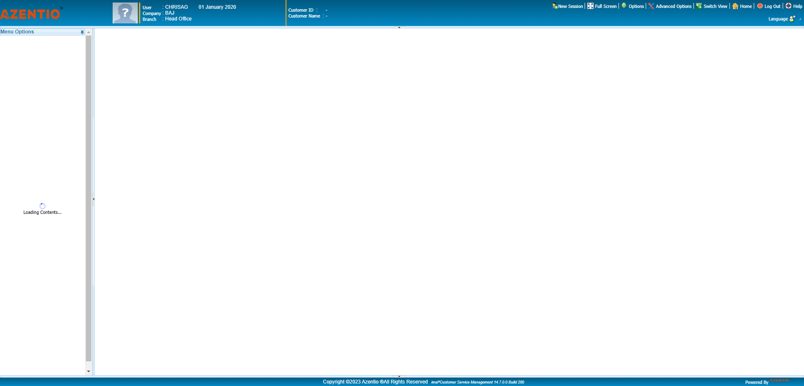And User Click Chequebook Request Menustepdefinitions.HooksClass.addScreenshot(io.cucumber.java.Scenario)screenshot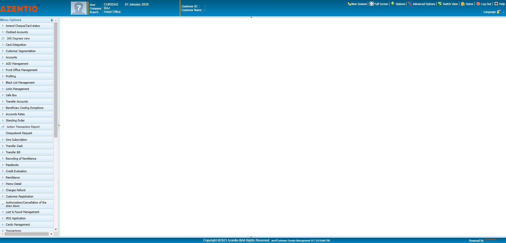And User Click Approve Sub Menustepdefinitions.HooksClass.addScreenshot(io.cucumber.java.Scenario)screenshotAnd User Update the test data id for CHB_103stepdefinitions.HooksClass.addScreenshot(io.cucumber.java.Scenario)screenshot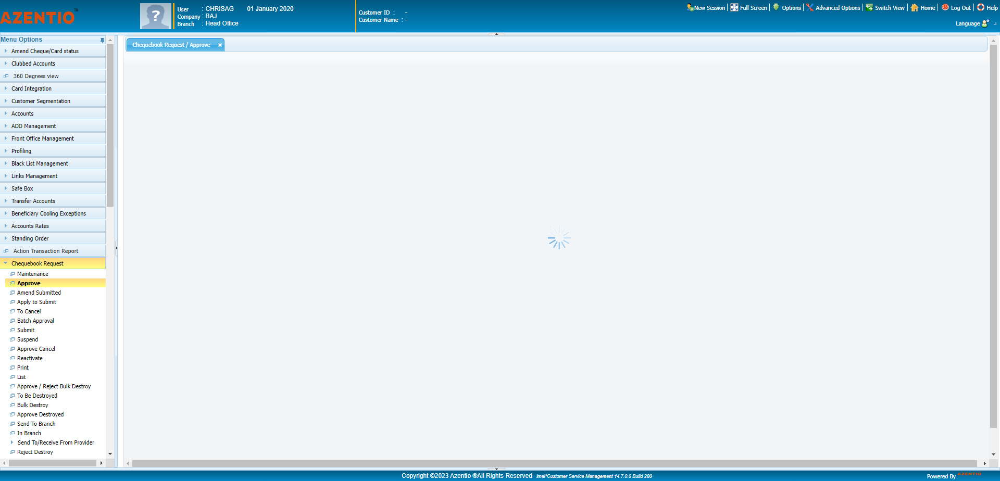And User Search Cheque Book Code in Approve Screenstepdefinitions.HooksClass.addScreenshot(io.cucumber.java.Scenario)screenshot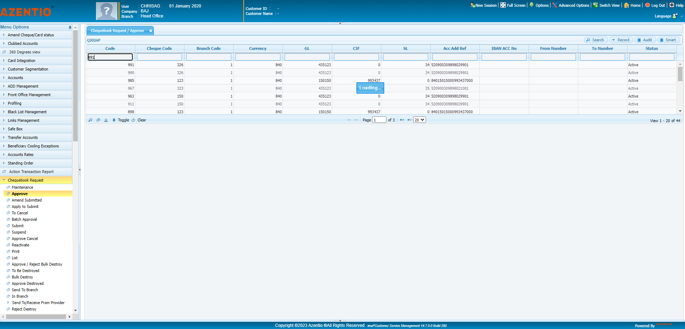And User Select Cheque Book Code in Approve Screenstepdefinitions.HooksClass.addScreenshot(io.cucumber.java.Scenario)screenshot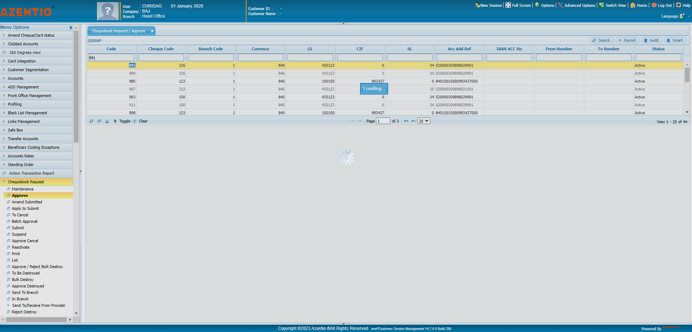And User Click Reject button in Approve Screenstepdefinitions.HooksClass.addScreenshot(io.cucumber.java.Scenario)screenshot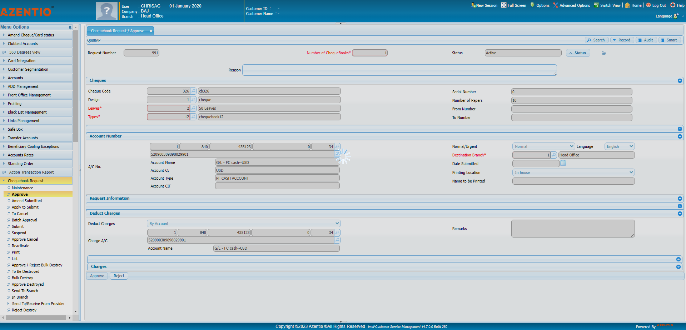And User Validate Reject Reason Missing Pop up in Approve Screenstepdefinitions.HooksClass.addScreenshot(io.cucumber.java.Scenario)screenshot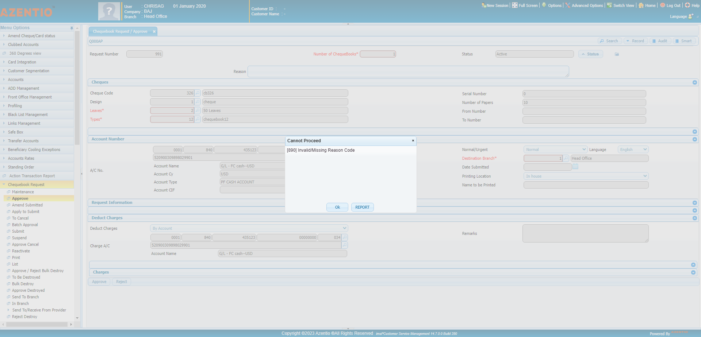And User Click Ok button in Cannot Proceed Pop up in in Approve Screenstepdefinitions.HooksClass.addScreenshot(io.cucumber.java.Scenario)screenshot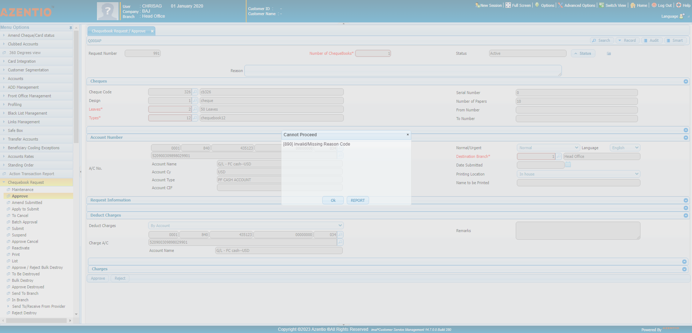And User Enter Reason for rejecting reverse chequebook record in in Approve Screenstepdefinitions.HooksClass.addScreenshot(io.cucumber.java.Scenario)screenshot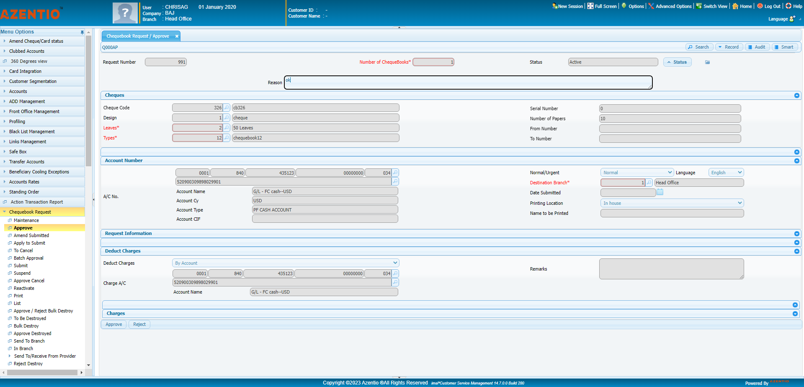And User Click Reject button in Approve Screenstepdefinitions.HooksClass.addScreenshot(io.cucumber.java.Scenario)screenshot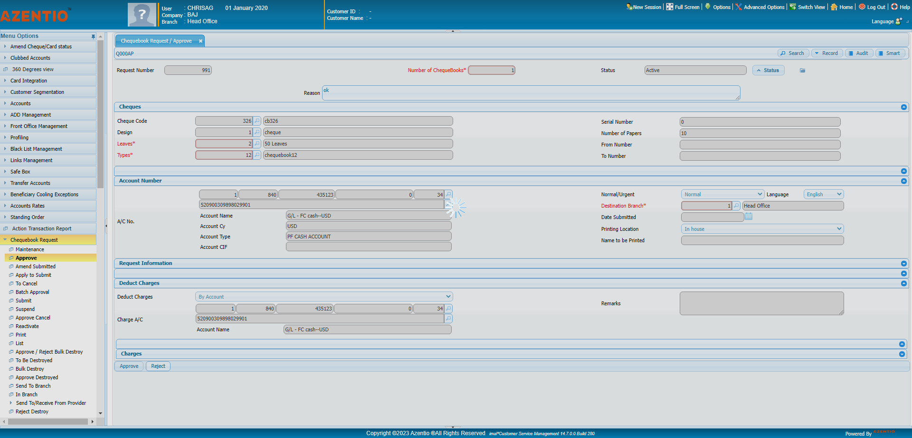And User Click Maintanence sub menu in chequebook requeststepdefinitions.HooksClass.addScreenshot(io.cucumber.java.Scenario)screenshot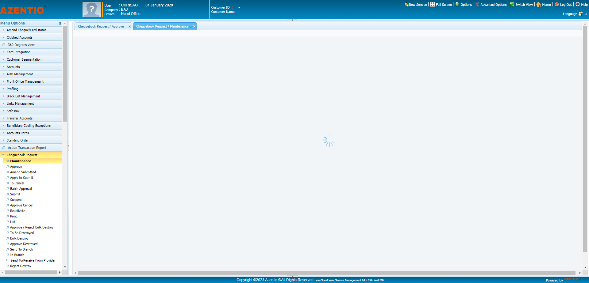And User Click Search button in chequebook request Maintenance Screenstepdefinitions.HooksClass.addScreenshot(io.cucumber.java.Scenario)screenshot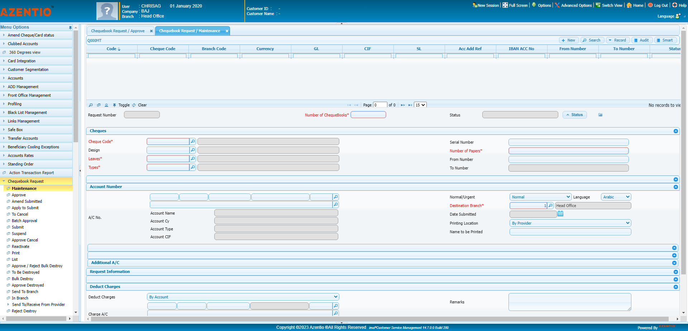And User Search Rejected chequebook code in Cheque book Request Maintenance Screenstepdefinitions.HooksClass.addScreenshot(io.cucumber.java.Scenario)screenshot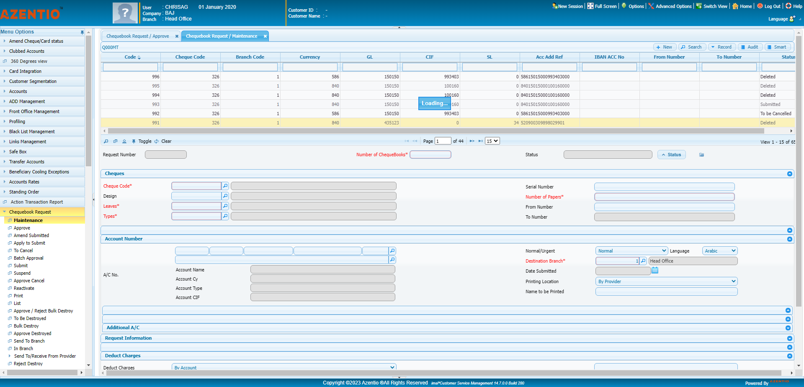Then User Validate the Rejected chequebook record in Cheque book Request Maintenance Screenstepdefinitions.HooksClass.addScreenshot(io.cucumber.java.Scenario)screenshot
Started
May 6, 2023 10:20:38 am
Ended
May 6, 2023 10:22:11 am
Features Passed
0
Features Failed
0
Features
Scenarios
Steps
Timeline
Tags
| Name | Passed | Failed | Skipped | Others | Passed % |
|---|---|---|---|---|---|
| @CHB_002 | 0 | 0 | 1 | 0 | 0% |
| @CHB_006 | 0 | 0 | 1 | 0 | 0% |
| @CHB_102 | 0 | 0 | 1 | 0 | 0% |
| @CHB_004 | 0 | 0 | 1 | 0 | 0% |
| @CHB_037 | 0 | 0 | 1 | 0 | 0% |
| @CHB_001 | 0 | 0 | 1 | 0 | 0% |
| @CHB_036 | 0 | 0 | 1 | 0 | 0% |
| @CHB_103 | 1 | 0 | 0 | 0 | 100% |
| @CHB_035 | 0 | 0 | 1 | 0 | 0% |
| @CHB_039 | 0 | 0 | 1 | 0 | 0% |
| @CHB_003 | 0 | 0 | 1 | 0 | 0% |
| @CHB_007 | 0 | 0 | 1 | 0 | 0% |
| @CHB_005 | 0 | 0 | 1 | 0 | 0% |
| @CHB_038 | 0 | 0 | 1 | 0 | 0% |
System/Environment
| Name | Value |
|---|---|
| version | 10 |
| os | windows |
-
@CHB_002
1 tests
@CHB_002
1 skippedStatus Timestamp TestName Skip 10:20:43 am checking if the user is able to create a chequebook - short process Testing functionalities of Chequebook feature screen.checking if the user is able to create a chequebook - short process -
@CHB_006
1 tests
@CHB_006
1 skippedStatus Timestamp TestName Skip 10:20:47 am checking if the user is able to destroy a chequebook - short process Testing functionalities of Chequebook feature screen.checking if the user is able to destroy a chequebook - short process -
@CHB_102
1 tests
@CHB_102
1 skippedStatus Timestamp TestName Skip 10:20:50 am Checking if the user is able to define the chequebook reject reason under "Reverse" screen Testing functionalities of Chequebook feature screen.Checking if the user is able to define the chequebook reject reason under "Reverse" screen -
@CHB_004
1 tests
@CHB_004
1 skippedStatus Timestamp TestName Skip 10:20:44 am checking if the user is able to cancel a chequebook without a reason - short process Testing functionalities of Chequebook feature screen.checking if the user is able to cancel a chequebook without a reason - short process -
@CHB_037
1 tests
@CHB_037
1 skippedStatus Timestamp TestName Skip 10:20:49 am checking if the user is able reject cancellation reversal throught alert Testing functionalities of Chequebook feature screen.checking if the user is able reject cancellation reversal throught alert -
@CHB_001
1 tests
@CHB_001
1 skippedStatus Timestamp TestName Skip 10:20:40 am checking if the user is able to create a chequebook - short process Testing functionalities of Chequebook feature screen.checking if the user is able to create a chequebook - short process -
@CHB_036
1 tests
@CHB_036
1 skippedStatus Timestamp TestName Skip 10:20:48 am checking if the user is able approve cancellation reversal throught alert Testing functionalities of Chequebook feature screen.checking if the user is able approve cancellation reversal throught alert -
@CHB_103
1 tests
@CHB_103
1 passedStatus Timestamp TestName Pass 10:20:50 am Checking if the user is able to define the chequebook reject reason under"approve" screen Testing functionalities of Chequebook feature screen.Checking if the user is able to define the chequebook reject reason under"approve" screen -
@CHB_035
1 tests
@CHB_035
1 skippedStatus Timestamp TestName Skip 10:20:48 am checking if the user is able to approve reverse cancellation record under "approve cancellation reversal " screen Testing functionalities of Chequebook feature screen.checking if the user is able to approve reverse cancellation record under "approve cancellation reversal " screen -
@CHB_039
1 tests
@CHB_039
1 skippedStatus Timestamp TestName Skip 10:20:49 am checking if the user is able to approve reverse cancellation with batch record under "approve reversal cancellation batch " screen Testing functionalities of Chequebook feature screen.checking if the user is able to approve reverse cancellation with batch record under "approve reversal cancellation batch " screen -
@CHB_003
1 tests
@CHB_003
1 skippedStatus Timestamp TestName Skip 10:20:44 am checking if the user is able to submit a chequebook - short process Testing functionalities of Chequebook feature screen.checking if the user is able to submit a chequebook - short process -
@CHB_007
1 tests
@CHB_007
1 skippedStatus Timestamp TestName Skip 10:20:48 am checking if the user is able to suspend a chequebook - short process Testing functionalities of Chequebook feature screen.checking if the user is able to suspend a chequebook - short process -
@CHB_005
1 tests
@CHB_005
1 skippedStatus Timestamp TestName Skip 10:20:45 am checking if the user is abel to cancel the chequebook with a reason -short process Testing functionalities of Chequebook feature screen.checking if the user is abel to cancel the chequebook with a reason -short process -
@CHB_038
1 tests
@CHB_038
1 skippedStatus Timestamp TestName Skip 10:20:49 am checking if the user is able to reverse cancellation with batch record under "to reverse cancellation batch " screen Testing functionalities of Chequebook feature screen.checking if the user is able to reverse cancellation with batch record under "to reverse cancellation batch " screen